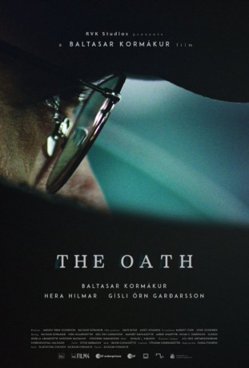

#6437 Der Eid
Alternativ: The Oath (Englischer Titel)
 
 IMDB-Wertung: 7.3 / 10
IMDB-Wertung: 7.3 / 10  Metascore: 0
Metascore: 0 
Icelandic auteur Baltasar Kormákur (Contraband, 2 Guns, Everest) directs and stars in this psychological thriller about a father who tries to pull his daughter out of her world of drugs and petty crime, only to find that danger can be found in unexpected places.
Jahr: 2016
Dauer: 103 Minuten
FSK:
Land: Island Studio: Alamode FilmTonspuren:
Untertitel: Deutsch,
Auflösung: 1080p (1920x808) Größe: 3420 MB
Genre: Thriller, Drama, Krimi
Regisseur: Baltasar Kormákur
Drehbuch: Ólafur Egilsson
Soundtrack:
Darsteller:
 Hera Hilmar als Anna
Hera Hilmar als Anna- Baltasar Kormákur als Finnur
- Gísli Örn Garðarsson als Óttar
 Ingvar Eggert Sigurðsson als Halldór
Ingvar Eggert Sigurðsson als Halldór- Joi Johannsson als Cop
 Þorsteinn Bachmann als Ragnar
Þorsteinn Bachmann als Ragnar- Thelma Gudmunds als Nurse
- Bjarki Thor als Police Detective
- Þorsteinn Gunnarsson als Gulli
- Sigrún Edda Björnsdóttir als Ragnheiður
- Þröstur Leó Gunnarsson als Eldri maður
- Jón Páll Eyjólfsson als Þór
- Kristján Franklin Magnúss als Bergþór
- Margrét Bjarnadóttir als Solveig
- Jakob Þór Einarsson als Læknir Önnu
- Tinna Hrafnsdóttir als Kennari
- Esther Talia Casey als Bank
- Ágúst Bjarnason als Gísli Helgason rannsóknarlögreglumaður
- Ólafur S.K. Þorvaldz als Faðir
- Þórunn Magnea Magnúsdóttir als Kolbrún
- Edda Arnljótsdóttir als Margrét
- Gunnar Viðar Valdimarsson als Bank customer
- Björn Ingi Hilmarsson als Rannsóknarlögreglumaður
- María Heba Þorkelsdóttir als Móðir
- Brynjar Birgisson als Funeral Guest
- Auður Aradóttir als Hrefna
- Helga Vala Helgadóttir als Prestur
- Konrad Thorleifsson als Police officer
- Kamilla Sif Carlsdóttir als Auður
- Guðrún Sesselja Arnardóttir als Birna
Datei: X:\2016(A-F)\Eid, Der (2016, FSK, 1920x808).mkv seit 21.06.2017
Festplatte: HD 2016(A-Z)
 Es gibt insgesamt 147 Filme in der Gruppe '2016(A-F)'
Es gibt insgesamt 147 Filme in der Gruppe '2016(A-F)'